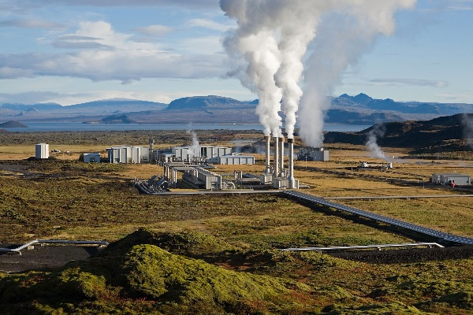
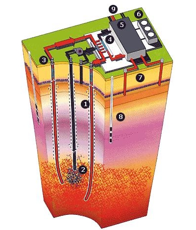

Energia geotérmica o seu funcionamento e tecnologia
“Geotérmico” vem das palavras gregas geo (terra) e therme (calor)assim, geotérmico significa calor terrestre. Desde os tempos primordiais que usamos a água geotérmica que fluiu livremente da superfície da terra como termas. O uso mais antigo e mais comum era, naturalmente, somente relaxar nas consoladoras águas quentes.
Mas, eventualmente, esta ‘água mágica’ foi usada (e ainda é) de outros modos criativos. Os Romanos, por exemplo, usaram a água geotérmica para tratar doença dos olhos e pele e, em Pompeia, aquecer edifícios.
|  |
ConversãoEste recurso pode ser classificado em duas categorias: Alta temperatura (T>150 ºC): este recurso está geralmente associado a áreas de actividade vulcânica, sísmica ou magmática. A estas temperaturas é possível o aproveitamento para a produção de energia eléctrica. Baixa temperatura (T<100 ºC): resultam geralmente da circulação de água de origem meteórica em falhas e fracturas e por água residente em rochas porosas a grande profundidade. O aproveitamento deste calor pode ser realizado directamente para aquecimento ambiente, de águas, piscicultura ou processos industriais. |
TecnologiasNos processos geotérmicos existe uma transferência de energia por convecção tornando útil o calor produzido e contido no interior da terra. O aproveitamento também pode ser feito utilizando a tecnologia de injecção de água a partir da superfície em maciços rochosos quentes. A utilização ideal da energia geotérmica é em cascata, a temperaturas progressivamente mais baixas, até cerca dos 20ºC (Diagrama de Lindal). Actualmente existe também a utilização de ciclos binários na produção de energia eléctrica e de bombas de calor (BCG) no caso de utilizações directas. Central energética “Hot dry rock”Hot dry rock (Rochas quentes secas) - fontes naturais de energia geotermal de alta entalpia. Uma alternativa energética limpa, praticamente inesgotável, que vem sendo considerada para o futuro próximo.
Modelo padrão para um sistema HDR com 3 poços, sendo um central para injeção de água e dois poços de extração de calor para geração de energia elétrica na superfície. |
 |